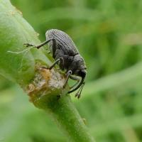

Вредители рапса
Крестоцветные блошки (Phillotreta sp.)

Описание:
Мелкие прыгающие жуки длиной 2-3мм, надкрылья чёрные или синие. Бывают двуцветные чёрные с жёлтой извилистой продольной полосой. Яйца бледно-жёлтые, полупрозрачные, продолглвато-овальные. Лисинки длинной до 4мм, червеобразные, светлые или светло-жёлтые, с тремя парами ног.
Стадии развития:
Зимуют неполовозрелые жуки под растительными остатками, опавшими листьями, в верхних слоях почвы. Выходят из мест зимовки очень рано, как только оттает почва. На посевах рапса, одновременно с возобновлением вегетации возобновляют питание перезимовавшие личинки, внутри стеблей и черешках листьев.В начале и середине лета происходит откладка яиц в поверхностный слой почвы, где отродившиеся личинки питаются мелкими корешками, не причиняя существенного вреда растениям. Окукливание происходит в почве. Длительность развития яиц составляет 3-11 дней, личинок-16-13, куколок-7-17 дней. Вновь отродившиеся жуки питаются на листьях, а также на цветках и стручках рапса и др. семенных капустных культур. Развиваются в одном поколении.
Повреждения:
Питаются, нанося листьям характерные язваподобные повреждения. В случае повреждения точки роста растение гибнет. При массовом размножении за 2–3 дня вредитель может полностью уничтожить всходы.
Меры борьбы:
В осенний период в начале роста рапса, при превышении экономического порога вредоносности(3-5 особей/м²) разрешённым на рапсе инсектицидом против блошек или долгоносиков.

Большой рапсовый (стеблевой) скрытнохоботник (Ceuthorhynchus napi)
Описание:
Долгоносики длиной 2,5-3,2 мм, тело сверху свинцово-черное, покрыто серыми чешуйками, снизу в светлых чешуйках. Головотрубка подогнута между основаниями передних ног. Сзади щитка небольшое светлое пятно, лапки буро-красные. Яйца овальные, белые полупрозрачные, длиной 0,5-0,6 мм. Личинка С-образно согнутая, желтовато-белая, безногая, длиной 4-5 мм, с желто-бурой головой.
Стадии развития:
Зимуют жуки под растительными остатками в лесополосах, садах, вблизи посевов рапса. Весной пробуждаются и выходят на поверхность при среднесуточной температуре воздуха 6-7°С. Заселяют посевы рапса в жаркие, солнечные дни при среднесуточной температуре воздуха более 11-12°С. Перед откладкой яиц жукам необходимо дополнительное питание в течение 2-3 недель: В средних жилках листьев, черешках и стеблях и откладывают яйца по 3-4 шт. Эмбриональное развитие заканчивается через 4-10 дней, продолжитель-ность личиночной стадии – 20-30 дней. В одном растении может быть несколько десятков личинок. Поскольку яйцекладка растянута в течение месяца, личинки встречаются в стеблях рапса почти до уборки. Окукливаются в почве. Отродившиеся жуки выходят на поверхность, некоторое время питаются на крестоцветных и уходят на зимовку..
Повреждения:
на рапсе долгоносики выгрызают ямки на черешках листьев и откладывают в них яйца. На листьях выгрызают круглые отверстия. Личинки прогрызают ходы в черешках листьев, продвигаясь к стеблю и по стеблю вниз до корневой шейки.В поврежденных растениях нарушается поступление воды и питательных веществ: в результа-те формируются небольшие стручки с мелкими семенами, потери урожая могут достигать 15-20 %, особенно в засуху.
Меры борьбы: